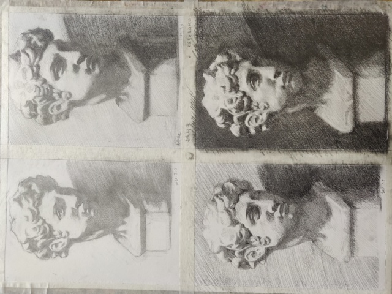
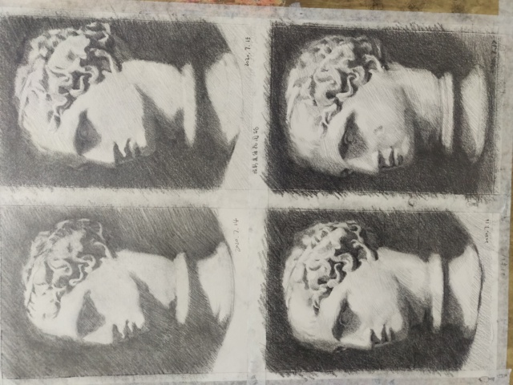

光影分解训练#
- date:
2020-07-01
- status:
Finished
通过使用有限的色层写生多张小幅石膏，观察（光影的）现象，总结规律。 画的时候以呈现光与空间的感觉为目标。
分四个阶段，这么分是为了为了掌握规律，之后的绘画中步骤是无所谓的，但也可将其作为作画的步骤。 务必摒弃抄暗部形状的画法 。
指导思想#
个人认为这个训练的指导思想有二：
梳理观察思路， 穷尽一切观察手段 ：
直接观察：改变观察的远近、角度，眯眼观察、触摸物象、
借助工具：改变光源（特定的光源下会出现一些不好观察的形体）、铅锤、卡尺
运用规律：借助已有的造型知识（包括下面总结的规律），物象的共性（解剖知识之于人） 总结出规律，来 辅助 判断该物象的造型特征
备注
很多时候规律在理论上不是完备的，而只是作为一种朴素的经验总结，因此不能照搬规律
这个训练中的很多规律在 /notes/6-lectures-on-sketch 已经提及了
实验求证：穷尽以上方法均无法观察明白的话，可以列出有限的几种可能，在画面上进行实验， 根据（光影）效果决定选用哪个结论
备注
比如我们搞不清楚某个地方是亮面还是暗面的话，可以先当作亮面画， 再当做暗面画，对比两种情况下那种的光感更强烈，选用强烈者
保持并最大化：
每一步里都要保持光感和空间感
每一步里都要在遵从上一步的 秩序 （即不破坏上一步的色层关系）的前提下进行
在每一步的光感和空间感达到极致时才进行下一步，
阶段训练#
1. 只画亮暗面#
- 色层
白、黑
- 要求
只画物体的亮暗两个面，亮面留白，暗面平涂，边线要虚
- 难点
存在一些灰面，难以判断属于亮面还是暗面
只有两个层次的情况下如何体现体积感
- 亮暗面的判断
亮暗面的存在是客观事实，不能说「把这个面当作亮面」
亮暗面由光源和物象两个因素产生， 光能照射到的地方就是亮部 ，照不到的地方就是暗部， 光线在物象上切点的连线即为明暗交界线
从
单元形体（而非整个物象）的层面上讲，可以根据形体的 凹凸、（受光的）方向、（距离光源的）远近 三个因素入手
- 如何体现光感和空间感
光感取决于三个因素：
暗部的形状（ 在 造型的诞生 有提及），形象地讲， 暗部是包裹在形体上的 ，更详细一点：
背光面的形状受物象本身影响
投影面的形状投影所在物和产生投影的物象影响
暗部的形状是匹配的形状：
同一暗部的要分配到多个形体中判断（匹配之一）
为同一形体服务的多个多个暗部也之间存在匹配关系（匹配之二）
暗部的灰度，太浅（朦胧）或太暗（剪影）都显得平，具体程度要 凭感觉 ， 在实践上可以 由浅到深 ，如果感觉光感不够则把暗部逐渐加深， 直到 光感最大化 为止
边的虚实，太虚会拉不开前后，太实会显得像剪影，总体上应当偏虚一些
备注
务必仔细检查每个暗部的形状是否「匹配」了再进行下一步
2. 增加中黑和浅灰#
- 色层
白、浅灰、黑、中黑
- 要求
在 1 的基础上，暗部增加中黑层次，亮部增加浅灰层次（面积最大），要呈现光与空间感
- 难点
如何找出中黑和浅灰？
如何画出有区分度的色层？
- 区分中黑
通过观察：暗部中明显深的地方就是中黑
备注
除非色差非常明显，否则不要直接通过「比较深浅」来确定中黑， 而是要去 从整体上去归纳色层 ，
根据一些规律：
同一固有色下，暗部的中投影面大概率比背光面深（直观地想是因为没有反光）
面的朝向性：在同一光源下，相同朝向的形体的暗部具有相似的色度，要将这些相似的暗部都归纳在一个色层里
通过实验：在难以确定的情况下通过实验（上面提到了）确定中黑
- 区分浅灰
正受光的面是白，其他的亮部都是浅灰
备注
存在一些看起来并不很白的正受光面和看起来不很灰的侧受光面， 同样这里不能陷入「比较深浅」的泥沼，而要 从整体上去归纳色层 ， 可以把光源的远近考虑进去判断： 离光源远越远，亮部是浅灰的概率就越大，即使是正受光面，也可能是属于浅灰， 即使看起来很亮。也可能属于浅灰
- 画有区分度的色层
在不同色层使用不同 B 的铅笔，在只有一种铅笔可用的情况下， 可以通过 排线的疏密 区分色层，但注意太稀疏的排线可能会影响后期的塑造
画的时候宁浅勿深，方便后期加深拉开色距
备注
同一固有色下，暗部的所有面总比亮部暗 ，暗部内部和亮部内部的色层的色距不能太大， 更不能超过亮暗部之间的色距。宁可雷同也不能破坏秩序
3. 增加重黑和深灰#
- 色层
白、浅灰、深灰、黑、中黑、重黑
- 要求
在 2 的基础上，暗部加上最重的黑，亮部加上深灰，边线保持虚，保持光与空间
2 里面提及的思路基本上可以套用到 3 里，额外补充一点其他规律：
重黑往往出现在：
投影的起始点
强烈的明暗交界线（和光源的距离、角度适合就会显得很强烈）
剧烈变化的形体（裂缝、凹陷等）
离光源比较近（太近了反射会削弱）的暗部
离光源很远的（光可能衰减、被干扰、遮挡；几乎没有反射）的暗部
深灰往往出现在：
非常侧的受光面
明暗交界线到亮部的转折处
离光源非常远的测受光面
4. 全因素素描#
- 要求
画成完整的全因素素描
实际上是要做到： 继续深化突出光和空间
盯着空间画
备注
「盯着空间画」听起来有点玄，在我理解是：在原来的色层上，根据空间关系进行加深、 过渡，并且用线要体现形体的走向
体现形体的饱满感，检查块面在整个形体上的转向是否明确
整理大的秩序，注意 亮 - 暗 - 亮 的节奏变化
其他（我觉得）要注意的点：
警惕抄颜色，画的是光影而不是物象
尊重（物象和背景的）固有色
作为古典素描的练习，应当弱化反光的存在
视觉上的明显的内轮廓线不一定要在画面上体现，以光影效果为重
避免形体上的大修改，思考如何让现有的形匹配而不是修改他们
Tips#
为什么光感空间感不够强？#
检查：
亮暗面是否找准了？
亮暗面之间的色距是否合适？
亮暗面内部的色距是否超过了亮暗面之间的色距？
多光源的情况下如何区别亮暗面？#
多个光源都照不到的地方肯定为暗面。
多个光源都能照到的地方肯定为亮面（很大几率是画面中的白）
主要的难点在于部分光源照到的地方的区分，可以选取其中一个作为主光源。 选取主光源后，可以将主光源照不到的地方确定为暗面，反之亦然。 但注意这个过程中要带入自己的判断：如果这个面被归纳为暗面， 但作为亮面能体现出更好的光感，那么将其归纳为亮面————即， 多做实验 。 在判断了一个面后，与该面同方向的面也可以判断出来了
备注
可以通过遮挡光源来确定某个面到底受哪个光源的影响
作业#
- 单光源下的小卫#
-

单光源下的小卫#
备注
也就是 📖 朱利亚诺·德·美第奇像

{kind=link}
- 双光源下的巴特农女神像#
-

双光源下的巴特农女神像#
备注
也就是 📖 雅典娜·帕德嫩

{kind=link}
如果你有任何意见，请在此评论。 如果你留下了电子邮箱，我可能会通过 回复你。